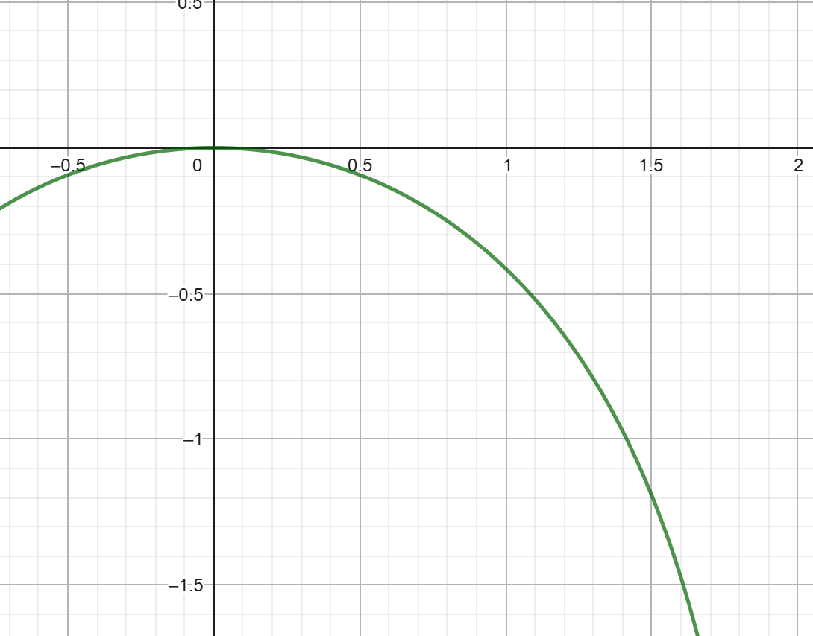

凯利公式在投资上的应用
总结
- 数学期望只能决定是否存在赚的可能性。而风险的分散程度才是决定下注比例的关键
- 对数期望的计算：考虑下注比例时，需要根据不同场景下的回报情况\(r\)，计算函数\(\log (1+rx)\)关于概率的加权平均。
- 只要存在风险，就不能无限制地使用杠杆投入
- 买彩票场景：对于小概率赚大钱的买彩票场景，只能用很少部分的本金投入
- 借钱场景：对于大概率赚小钱的借钱场景，必须要警惕风险的估计是否准确，且也不能投入太大比例
- 分散风险：存在多个独立的投资机会时，应当分散风险。
使用蒙特卡洛模拟法，暴力遍历所有的比例组合可能性，看看哪个更好的在线工具：
https://wjk.moe/monte-carlo-invest/
前言
在和概率相关的游戏中，我们常常会直接看数学期望，然而，只看期望的话，难道意味着期望为正的赌局我们就直接all in，期望为负的赌局就完全不参与吗？比如这个视频中，明明是期望为正的赌局，all in策略却在99%的情况下最后输到根本不剩多少？
同样的道理在德州扑克中也会出现。合适的下注比例非常重要，下注尺度错误会直接损失EV。
而数学期望只能决定是否存在赚的可能性。考虑这样一种抽奖场景，你必须投入你所有本金，1%的概率赚200倍，99%的概率全亏。即使你知道你总体期望是赚的，但是你依然有99%的可能性倾家荡产。而在剩下1%的情况又有着过多的钱。我想大多数人都不会去参与这个游戏。
核心的道理是，中位数非常重要。可以想象成，在平行世界里，有很多个你在投资后有着不一样的结果，怎么让平行世界里的大多数的你（至少一半，即中位数）都能最终富起来。
深刻理解凯利公式是投资的基础。更为客观的投资，投资尺寸应该考虑的是当前投资策略，看作一个多次重复的赌局时，如何最大化中位数的增长。
凯利公式的推导
在赌博或投资中，假设每次投注比例为\(f\)（\(0 \leq f \leq 1\)），初始财富为\(W_0\)。每次赌博的获胜概率为\(p\)，失败概率为\(q = 1 - p\)，获胜时的赔率为\(b\)（即获胜时财富变为\(1 + fb\)，失败时损失全部投入，财富变为\(1 - f\)）。经过\(n\)次独立赌博后，财富\(W_n\)为：
\[ W_n = W_0 \cdot (1 + fb)^S \cdot (1 - f)^F \]
其中\(S\)是获胜次数，\(F\)是失败次数，且\(n = S + F\)。
中位数财富与几何平均增长率
从长期的角度，所有财富都是指数增长的。因此，我们尝试从对数的视角去看我们的财富增长情况。
从财富表达式可得：
\[ \log W_n = \log W_0 + S \log(1 + fb) + F \log(1 - f) \]
如果重复次数足够多，\(S = np\),\(F = nq\)
\[ \log W_n = \log W_0 + n \left[ p \log(1 + fb) + q \log(1 - f) \right] \]
因此，最大化\(\mathbb{E}[\log W_n]\)等价于最大化那个\(n\)的系数，即以下函数：
\[ G(f) = p \log(1 + fb) + q \log(1 - f) \]
这里\(G(f)\)就是每期赌博的期望对数回报，即几何平均增长率。将它关于\(f\)求导
为了找到使几何平均增长率 \[ G(f) = p \log(1 + fb) + q \log(1 - f) \]
求导得到最大值
重要的是对数的视角，有了公式之后，我们只需要求导找出极值点即可了。下面是枯燥的计算过程，可以跳过。总之最后计算出了凯利公式
最大的最优投注比例\(f^*\)，我们对\(G(f)\)关于\(f\)求导，并令导数为零。
首先计算导数：
\[ \frac{dG}{df} = p \cdot \frac{b}{1 + fb} + q \cdot \frac{-1}{1 - f} = \frac{pb}{1 + fb} - \frac{q}{1 - f} \]
令导数为零，求极值点：
\[ \frac{pb}{1 + fb} - \frac{q}{1 - f} = 0 \]
移项得：
\[ \frac{pb}{1 + fb} = \frac{q}{1 - f} \]
交叉相乘：
\[ pb(1 - f) = q(1 + fb) \]
展开两边：
\[ pb - pbf = q + qfb \]
整理含\(f\)的项：
\[ pb - q = f(pb + qb) = f b (p + q) \]
由于\(p + q = 1\)，有：
\[ pb - q = f b \]
解出\(f\)：
\[ f^* = \frac{pb - q}{b} \]
这就是凯利公式（Kelly Criterion）的标准形式。
真正的核心：多次重复视角下的对数期望
假如我们有一个投资机会，它未来的回报率\(f\)有多种可能。这里我们假设有三种情况，可能性分别是\(p_1, p_2, p_3\)，加起来等于1，同时三种情况下的回报率是\(r_1, r_2, r_3\)。
这里回报率\(r\)的定义是，比如，回报率是0.1表示赚了投入的10%，回报率是-0.1表示亏了投入的10%。
打算投入产品的比例是\(x >= 0\)，如果\(x > 1\)则表示加杠杆了。单次进行投资，我们投资后的钱就是 本金乘以\(1+rx\)。
我们反复进行投资，最终的回报是
\[ W_n = W_0 \cdot {(1 + r_1x)}^{S_1} \cdot {(1 + r_2x)}^{S_2} \cdot {(1 + r_3x)}^{S_3} \]
其中，几个\(S\)表示几种情况出现的次数。如果次数足够多，那么几种情况出现的次数会和概率成比例，分别等于n乘以对应的概率。
\[ W_n = W_0 \cdot {(1 + r_1x)}^{n \cdot p_1} \cdot {(1 + r_2x)}^{n \cdot p_2} \cdot {(1 + r_3x)}^{n \cdot p_3} \]
接下来我们求对数：
\[ \log W_n = \log W_0 + n \cdot p_1 \log (1+r_1x) + n \cdot p_2 \log (1+r_2x) + n \cdot p_3 \log (1+r_3x) \]
我们关注关于n的系数，因此关注：
\[ p_1 \log (1+r_1x) + p_2 \log (1+r_2x) + p_3 \log (1+r_3x) \]
这个就是最核心，最需要深入理解的式子。以后投资时，可以列出这个函数，然后去在线画一下函数图像，比如用GeoGebra。
深入理解对数期望
\[ p_1 \log (1+r_1x) + p_2 \log (1+r_2x) + p_3 \log (1+r_3x) \]
直观上看，首先是概率加权，给出现可能性更大的情况更大的权重，这个比较好理解。
其次，回报率会按照下面的函数处理：
\[ f(x) = log(1+rx) \]
我们按照那个视频里的经典场景，投一枚硬币，0.5概率赚本金的0.8，0.5概率亏损一半本金。
对于赚的情况，系数r是大于零的，这里是0.5，此时对应的函数\(\log(1+0.8x)\)图像如下：

函数随着x一直增长，这意味着，如果没有损失本金的情况，那么自然应该无限加杠杆，加的越多赚的越多。
对于亏的情况，系数\(r=-0.5\)，此时函数\(\log(1-0.5x)\)图像如下：

这个函数图像可以看作是\(\log x\)的翻转平移。
首先我们可以观察到，随着x的增长，函数指数级地向下掉。即使和上面增长的函数图像叠加，上面log级别的增长怎么也不可能比得过这里指数级的下跌。这意味着，只要存在风险，就不能无限制加杠杆，否则会极大放大归零风险。特别是当\(x=2\)，加两倍杠杆的时候，正好让自己可以一次归零。
然后我们将两个函数相加，函数\(\log(1+0.8x) + \log(1-0.5x)\)的图像如下：

（严格来说，两个函数都要乘以概率0.5，但是函数图像的趋势类似）
可以看到，正好在0.375的时候达到最高点，和凯利公式的结果一致。投入本金的37.5%是最优解。
同时，我们如果在游戏中没有优势，即赢的时候也只能赚一半的本金，那么就有函数图像\(\log(1+0.5x) + \log(1-0.5x)\)，如下：

可以看到，无论怎么投入，大多数人的本金都是减少的。
总的来说，因为投资总是有赚钱的情况和不赚钱的情况，因此一般都是这样的两个图像叠加。关键在于是否有大于零的情况，以及极值点对应的投入是多少。
判断赚钱的机会
还是这个式子，但是这次我们观察在零点处的斜率，看看我们投入很少的本金，是不是能赚到钱。
\[ p_1 \log (1+r_1x) + p_2 \log (1+r_2x) + p_3 \log (1+r_3x) \]
求导后可得
\[ f'(x) = \frac{p_1 r_1}{1 + r_1 x} + \frac{p_2 r_2}{1 + r_2 x} + \frac{p_3 r_3}{1 + r_3 x} \]
取\(x = 0\)
\[ f'(0) = p_1 r_1 + p_2 r_2 + p_3 r_3 \]
这个其实就是数学期望了。不同的概率下，损失和盈利加权平均。所以期望还是有用的，但是具体的投入比例和期望无关，而是和结果的离散程度有关。
场景：买彩票
比如我们考虑买彩票的场景。当然，因为彩票的总体期望是负的，所以怎么算都是赚不了钱的。因此我们看看期望为正的彩票场景：有1%的概率赚200倍，99%概率损失全部本金。
期望：\(0.01*200+0.99*-1 = 1.01\)
此时的函数是\(0.01\log(1+200x) + 0.99\log(1-x)\)

此时只能投入很少量的本金！而期望是几乎翻倍！期望为正只能判断是否能赚，而决定投入比例的是结果的离散程度。
场景：借钱
假如你要存银行（也算是借钱给银行了），在99%的可能性下会还你的本金加5%利息，在1%的可能性下世界末日，银行倒闭。
期望：\(0.99*0.05 - 0.01 * -1=0.0295 > 0\)
函数：\(0.99\log(1+0.05x) + 0.01\log(1-x)\)

可以看出，还是可以投入大部分钱的，至少大概80%左右。
需要警惕的是，你是否低估了不还钱的风险，比如借给网上认识的网友。只需要将不还钱的可能性增加到5%，就可以抵消利息带来的正期望。
此时期望：\(0.97*0.05 + 0.03*-1 = -0.0025\)
如果不还钱的可能性只增加到4%，虽然还是有的赚，但是应该借的比例也依然急剧下降
此时函数：\(0.96\log(1+0.05x) + 0.04\log(1-x)\)

可以看到该借的百分比少于30%了。
此时，你的网友说，你借给银行期望也才0.0295，我给你提高利率，让你最终的期望更高，这下可以借给我了吧
利率被提高到了8%，此时期望是\(0.96*0.08 + 0.04*-1 = 0.0368\)。然而，此时的函数\(0.96\log(1+0.08x) + 0.04\log(1-x)\)图像是：

此时应该借的比例依然略小于二分之一。
分散风险
如果有多个独立的赌局，同时分散在他们上，有助于减少风险。
比如最开始的投硬币赚0.8亏0.5的场景，如果钱被等量分散在两个独立赌局，那么其实就变成了四种情况：
- 0.25的概率两边都赚，赚0.8的投入本金
- 0.5的概率一赚一亏，赚0.15的投入本金
- 0.25的情况两边都亏，亏0.5的投入本金
可以明显看出，严重亏损的概率明显减少。这也使得单次可以投入的本金变多了。
函数是\(0.25 \log (1+0.8x) + 0.5 \log (1+0.15x) + 0.25 \log (1-0.5x)\)
当然，前提是风险真正分散了。如果你在A股市场买不同股票，其实背后有很大一块共同的大盘风险。真正分散则需要配置黄金ETF，豆粕ETF等真正风险独立的产品，或者做空等量的指数对冲大盘风险。

最优投资比例几乎是原来0.375的两倍，即0.75左右。
更复杂的情况
当然，如果同时有着不同的投资机会，那么自然可能会在两个机会上分散，但是有着不同的投资比例。此时可以使用蒙特卡洛模拟法，暴力遍历所有的比例组合可能性，看看哪个更好。
在线工具：
https://wjk.moe/monte-carlo-invest/
此外，后续还可以进一步引入夏普比率，通过折算的年化去考虑资金占用的时间太长造成的影响。